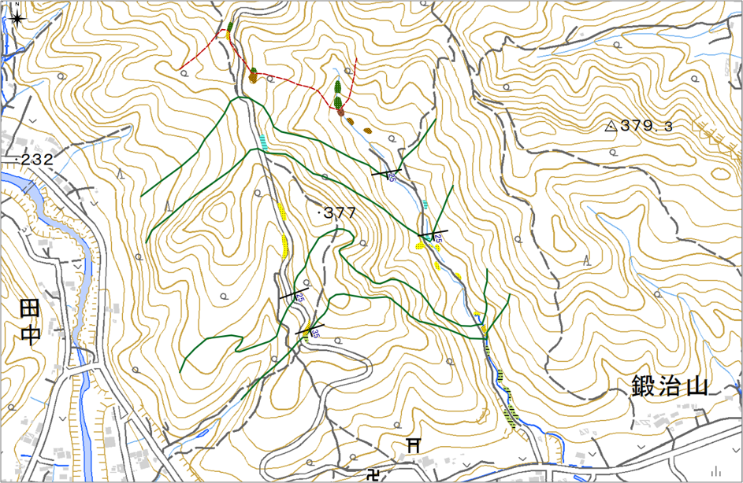
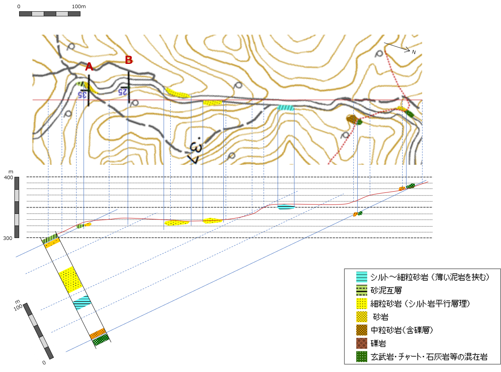
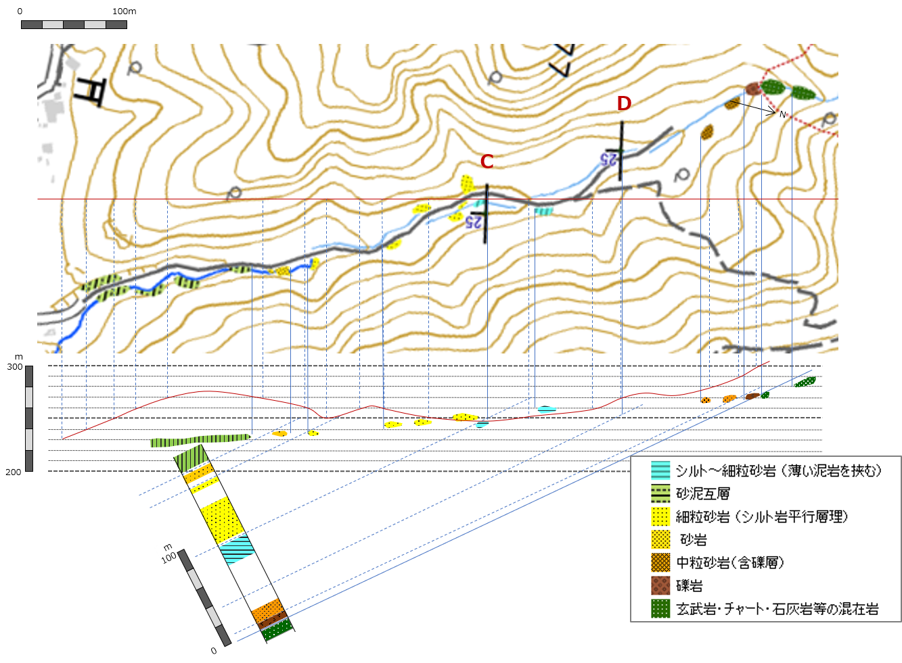
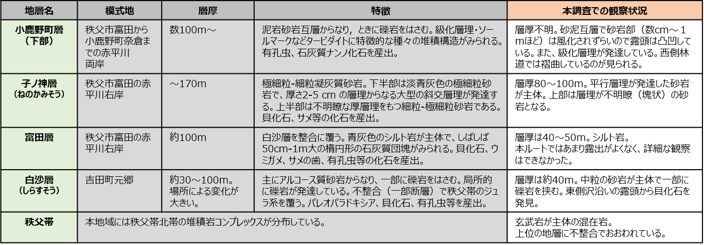

2-6. 解答例
⇨下記の解答例をPDFで表示（またはダウンロード）する場合は、こちら をクリック。
境界線作図例

地質図作図例

断面図・柱状図


調査結果まとめ
調査の結果、全体としては南にゆるく傾斜した単斜構造（南ほど上位の地層が重なる）であることが分かりました。
この地域は、5万分の１地質図幅（地域地質研究報告 5万分の l地質図幅 東京(8)第 27号 「寄居地域の地質(地質調査所)」）が刊行されているので、その内容と観察した地層を対比してみました。


立体図

Webで表示した立体図です。